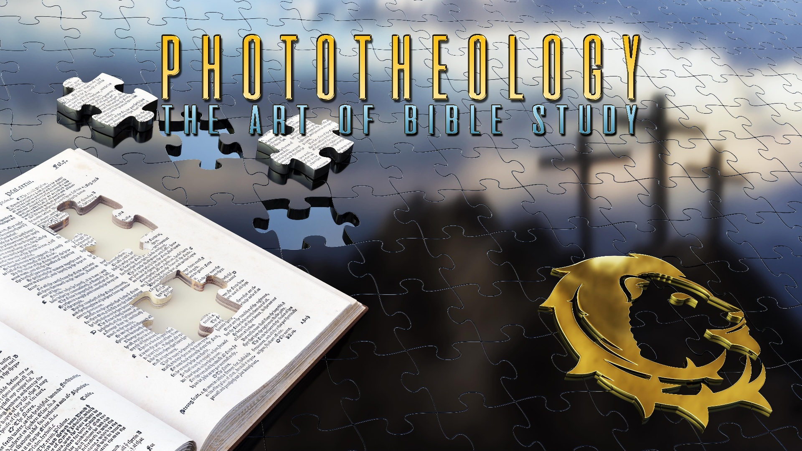

THE PHOTOTHEOLOGY PALACE
Complete Training Manual

"These are they which testify of me." — John 5:39
8 Floors • 38+ Rooms • One Mission: See Christ in Every Chapter
Version 1.0 • March 2026
Table of Contents
Part 1: Welcome & Overview
What Is Phototheology?
The Palace Metaphor — 8 Floors, 38+ Rooms
How the System Works: Study → Practice → Master
Getting Started Guide for New Users
Subscription Tiers
Part 2: Floor-by-Floor Room Guide
Floor 1: Furnishing — Memory & Visualization (6 Rooms)
Story Room • Imagination Room • 24FPS Room • Bible Rendered • Translation Room • Gems Room
Floor 2: Investigation — Detective Work (5 Rooms)
Observation Room • Def-Com Room • Symbols/Types Room • Questions Room • Q&A Chains Room
Floor 3: Freestyle — Connections (5 Rooms)
Nature Freestyle • Personal Freestyle • Bible Freestyle • History/Social Freestyle • Listening Room
Floor 4: Next Level — Christ-Centered Depth (10 Rooms)
Concentration • Dimensions • Connect-6 • Theme • Time Zone • Patterns • Parallels • Fruit • Christ in Every Chapter • Room 66
Floor 5: Vision — Prophecy & Sanctuary (4 Rooms)
Blue Room • Prophecy Room • Three Angels • Feasts Room
Floor 6: Three Heavens — Cycles & Cosmic Context (7 Rooms)
First Heaven • Second Heaven • Third Heaven • Three Heavens • Eight Cycles • Juice Room • Mathematics Room
Floor 7: Transformation — Spiritual & Emotional (3 Rooms)
Fire Room • Meditation Room • Speed Room
Part 3: Bible Study Systems
Bible Rendered — 51 Frames Covering All 1,189 Chapters
24FPS System — Genesis Visual Gallery
Sanctuary Blueprint
Seven Feasts Calendar
Part 4: Teaching & Curriculum Guide
12-Week Disciple Training Program
14-Month Path Curriculum Overview
How to Facilitate Group Studies
Sample Lesson Plans
Part 5: Quick Reference & Appendices
All Rooms at a Glance
Glossary of Phototheology Terms
Tier Comparison Chart
What Is Phototheology?
Phototheology (from Greek phos = light + theos = God + logos = word/study) is a comprehensive Bible study system that transforms Scripture into a vivid, memorable, and Christ-centered experience. It combines the ancient art of memory palaces with systematic theology to create an immersive framework for studying, memorizing, and teaching the entire Bible.
At its core, Phototheology answers one question: "How do I see Christ in every chapter of the Bible?"
The system is built on three convictions:
- The Bible is one unified testimony to Jesus Christ (John 5:39). Every chapter, from Genesis to Revelation, testifies of Him.
- Visual memory is more powerful than verbal memory. Images, scenes, and spatial relationships encode information 6x more effectively than abstract text alone.
- Study must bear fruit. Knowledge without transformation is dead. Every method in the Palace is designed to produce spiritual growth, not just intellectual achievement.
The Phototheology Promise: A believer who masters this system will be able to recall any Bible story on demand, trace any theme from Genesis to Revelation, see Christ in every chapter, and teach Scripture with vivid clarity — all from memory.
The Palace Metaphor
The Phototheology Palace is organized like a multi-story building. Each floor represents a level of Bible study skill, and each floor contains several rooms, each with a unique methodology.
You enter on Floor 1 and work your way up. Early floors build foundational memory; middle floors develop analytical depth; upper floors achieve prophetic vision and spiritual transformation.
Palace Architecture at a Glance
| Floor | Name | Focus | Rooms |
|---|
| 1 | Furnishing | Memory & Visualization | 6 rooms |
| 2 | Investigation | Detective Work | 5 rooms |
| 3 | Freestyle | Creative Connections | 5 rooms |
| 4 | Next Level | Christ-Centered Depth | 10 rooms |
| 5 | Vision | Prophecy & Sanctuary | 4 rooms |
| 6 | Three Heavens | Cycles & Cosmic Context | 7 rooms |
| 7 | Transformation | Spiritual & Emotional | 3 rooms |
Total: 7 floors, 40 rooms — each with a unique method, deliverable, and set of examples.
How the System Works: Study → Practice → Master
Every room in the Palace follows a three-phase learning cycle:
- Study — Read the room's methodology and understand its purpose. Each room has a core question, step-by-step method, and examples.
- Practice — Apply the method to a real Bible passage. Produce the room's deliverable (beat list, sensory paragraph, image index, gem card, etc.).
- Master — Repeat until the method becomes second nature. A mastered room means you can apply it instantly to any passage.
Tip: You don't need to master all rooms before moving to the next floor. Start with Floor 1, get comfortable with 2-3 rooms, then explore Floor 2. The Palace is designed for progressive depth, not linear completion.
Getting Started Guide
Your First Week in the Palace
Day 1-2: Enter the Story Room (Floor 1)
Choose a familiar Bible story (Joseph, David & Goliath, or the Prodigal Son). Break it into 3-7 memorable beats. Write them with arrows showing sequence. This is your first deliverable.
Day 3-4: Visit the Imagination Room (Floor 1)
Take your story and step inside it. What do you see, hear, feel, smell, and taste? Write a sensory paragraph. You're building emotional memory.
Day 5-6: Try the 24FPS Room (Floor 1)
Read Genesis 1-5. For each chapter, create one quirky visual image that captures the chapter. Gen 1 = Birthday Cake Earth. Gen 3 = Snake + Apple + Clock. Build your first chapter-image index.
Day 7: Explore the Gems Room (Floor 1)
Take 2-3 verses from different books and place them side by side. What insight emerges from their combination? Record your first gem.
Key App Features
- Palace Tab — Browse all floors and rooms, access methodologies and practice exercises
- Bible Tab — Full Bible reader with integrated study tools
- Jeeves AI — AI-powered study assistant that helps you apply Palace methods to any passage
- Growth Journal — Track your study progress and capture deliverables
- Daily Verse — A new verse each day with Palace room prompts
- Daily Challenge — Timed exercises to sharpen your skills
- Community — Share gems, insights, and study notes with other students
- Video Training — Visual demonstrations of each room's methodology
- Encyclopedia — Deep reference articles on Bible topics
Subscription Tiers
Phototheology Palace offers multiple access levels to serve individuals, students, churches, and patrons.
| Feature | Free | Essential | Premium | Student | Patron |
|---|
| Floor 1 Access (6 rooms) | ✓ | ✓ | ✓ | ✓ | ✓ |
| Floors 2-7 Access (34 rooms) | ✗ | ✓ | ✓ | ✓ | ✓ |
| Jeeves AI Assistant | 10/day | Unlimited | Unlimited | Unlimited | Unlimited |
| Daily Devotionals | ✓ | ✓ | ✓ | ✓ | ✓ |
| Daily Challenge | 3/week | Unlimited | Unlimited | Unlimited | Unlimited |
| Community (view) | ✓ | ✓ | ✓ | ✓ | ✓ |
| Community (post) | ✗ | ✓ | ✓ | ✓ | ✓ |
| Bible Reader | ✗ | ✓ | ✓ | ✓ | ✓ |
| Sermon Builder | ✗ | ✗ | ✓ | ✓ | ✓ |
| Research Mode | ✗ | ✗ | ✓ | ✓ | ✓ |
| Premium Games | ✗ | ✗ | ✓ | ✓ | ✓ |
| Church Group Access | ✗ | ✗ | ✗ | ✗ | ✓ |
Church Access: Churches can purchase group licenses that grant all members Premium-level access. Contact us for church pricing. Teachable students and Patreon patrons ($15+/month) also receive full Premium access.
Load the canon's storyline into long-term memory as vivid scenes. Build your foundational library of stories, images, and gems. This is where every Phototheology student begins.
Method
- Read the narrative passage completely
- Identify 3-7 distinct "beats" (major plot movements)
- Name each beat with a punchy NOUN or VERB (not full sentences)
- Arrange beats chronologically using arrows (→)
- Test: Can you teach this story to a child using only these beats?
- Write a one-line plot summary
Examples
- Genesis 37 (Joseph): Dream → Coat → Pit → Caravan → Egypt → Potiphar
- Exodus 14 (Red Sea): Trapped → Fear → "Stand Still" → Staff Raised → Waters Part → Crossing → Egypt Drowns
- 1 Samuel 17 (David & Goliath): Giant Mocks → Boy Arrives → 5 Stones → Sling → Head Severed
Deliverable
Beat list (3-7 beats with arrows) + one-line plot summary capturing the arc from start to finish.
Method
Step into the scene. Engage all five senses: What do you SEE? HEAR? TOUCH? SMELL? TASTE? Let the passage become a lived experience. Capture in one sentence how this encounter resonates with your own story.
Deliverable
Short sensory paragraph + one sentence of personal resonance.
Method
- Read the chapter
- Identify the MOST MEMORABLE element
- Convert to a SINGLE VISUAL IMAGE — preferably quirky
- Test: Does it instantly trigger the chapter content?
- Record: Chapter Number → Image Description
Deliverable
Chapter → Image table (e.g., "Gen 1 = Birthday Cake Earth, Gen 3 = Snake+Apple+Clock").
Method
- Divide the Bible into 24-chapter blocks (~51 blocks)
- Read/review each block for its CENTRAL MOVEMENT
- Choose a SIMPLE SYMBOLIC GLYPH (/, ×, ↑, →, word, or emoji)
- Write a 1-2 sentence explanation
- Memorize the sequence
Deliverable
A 51-symbol legend — one symbol per 24-chapter block with explanation.
Three Levels
- Level 1 (Verse → Icon): Single verse becomes one memorable image
- Level 2 (Passage → Comic): Passage becomes 3-panel sequential story
- Level 3 (Book → Mural): Entire book becomes panoramic visual
Deliverable
Sketches or detailed written descriptions of visual translations, labeled with verse references.
Deliverable
A "Gem Card" showing: the verses combined, the insight discovered, and how you'd use it in teaching.
On the Investigation Floor, you become a detective. You log evidence, study definitions, profile symbols, interrogate texts with questions, and cross-examine Scripture with Scripture. No rushing to conclusions — gather the evidence first.
Method
Log 30-50 observations per passage without interpretation. Note repeated words, unusual details, sequence changes, who speaks, who acts, what's missing, and what surprises you.
Deliverable
Observation log of 30-50 details, organized by category (characters, setting, dialogue, action, themes).
Deliverable
Word study cards (Greek/Hebrew definitions) + commentary synthesis notes with source citations.
Deliverable
Symbol profile cards mapping symbol → meaning → key texts → Christ connection.
Deliverable
Question matrix: 5+ intratextual, 5+ intertextual, and 3+ phototheological questions per passage.
Deliverable
Q&A chain document: Question → Answer Text → Cross-Reference → Conclusion.
The Freestyle Floor trains you like a freestyle rapper: see something in the world and instantly connect it to Scripture. Nature, personal experiences, other Bible texts, history, and conversations all become springboards for biblical insight.
Deliverable
Nature → Scripture connection cards. Object observed + verse(s) connected + lesson drawn.
Deliverable
Life event + Scripture parallel + spiritual lesson. Building authentic testimony material.
Deliverable
Verse genetics map: Target verse → siblings (same theme) → cousins (typological links) → distant relatives (thematic echoes).
Deliverable
Historical event → biblical parallel → spiritual lesson card.
Deliverable
Listening log: What was said → Scripture triggered → connection made.
Floor 4 is the heart of the Palace. Every room on this floor is designed to deepen your study by connecting everything to Christ, tracing themes across Scripture, and testing interpretations for spiritual fruit.
Deliverable
Christ-connection statement: Title/role of Christ in the passage + how He acts + supporting texts.
Deliverable
5D worksheet: 1-2 sentences per dimension, each offering a distinct insight.
Deliverable
6-genre connection map: Topic + one representative text from each genre + synthesis statement.
Deliverable
Theme placement: Passage + which wall/floor/ceiling + how it contributes to that theme.
Deliverable
6-zone placement: Heaven Past / Heaven Present / Heaven Future / Earth Past / Earth Present / Earth Future.
Deliverable
Pattern map: Pattern name + sequential stages + where the current passage fits.
Deliverable
Parallel pair: Event A + Event B + shared structure + distinct differences + Christ-centered insight.
Deliverable
Fruit test: Interpretation statement + which fruit(s) it cultivates + evidence from the passage.
Deliverable
Chapter → Christ title/role → how He acts → anchor verse. One entry per chapter studied.
Deliverable
66-book theme trace: Theme name + one statement per book showing how it appears.
The Vision Floor gives you the telescope lens of Scripture. Here you map texts to the sanctuary blueprint, align prophecies, study the Three Angels' Messages, and trace God's prophetic calendar through the seven feasts of Israel.
Sanctuary Articles
| Article | Location | Christ Connection |
|---|
| Altar of Burnt Offering | Outer Court | The Cross — Christ our sacrifice |
| Laver | Outer Court | Baptism — cleansing by the Word |
| Lampstand | Holy Place | Light of the World — the Spirit |
| Table of Showbread | Holy Place | Bread of Life — the Word of God |
| Altar of Incense | Holy Place | Christ's intercession — our prayers |
| Ark of the Covenant | Most Holy Place | Law + mercy seat + God's throne |
Deliverable
Sanctuary mapping: Passage → which article/service → Christ connection → personal application.
Deliverable
Prophetic timeline placement: Passage → which prophecy → historical fulfillment → present application.
Deliverable
Three Angels connection: Passage → which angel's message → doctrinal tie → mission application.
Deliverable
Feast mapping: Passage → which feast → typological connection → Christ fulfillment.
Floor 6 provides the cosmic framework for interpreting Scripture. Here you learn to locate any text within the correct prophetic horizon, covenant cycle, time prophecy, and heavenly context.
The top floor ensures that all study leads to transformation. The Fire Room ignites devotion, the Meditation Room deepens it, and the Speed Room sharpens it for instant deployment.
Deliverable
Conviction statement: What moved you + what it demands of you + prayer response.
Deliverable
Meditation journal: Phrase chosen + insights gained through repetition + prayer that emerged.
Deliverable
Speed drill results: Passage + connections made in 60 seconds + rooms activated.
Bible Rendered — 51 Frames Covering All 1,189 Chapters
The Bible Rendered system compresses the entire Bible into 51 symbolic frames. Each frame represents a ~24-chapter block. Below are all 51 sets with their images, symbols, and descriptions.
Sets 1-10: Pentateuch & Conquest

1. ÷ Division
Genesis 1-24

2. × Multiplication
Genesis 25-50

3. Deliverance
Exodus 1-24

4. Sanctuary
Ex 25-Lev 8

5. Holiness
Lev 9-Num 5

6. Journey
Numbers 6-29

7. Threshold
Num 30-Dt 17

8. Transition
Dt 18-Josh 7

9. Conquest
Josh 8-Judg 7

10. Chaos Cycles
Judg 8-1Sa 6
Sets 11-20: Monarchy & Wisdom

11. Monarchy Rise
1 Sam 7-30

12. Succession War
1Sa 31-2Sa 23

13. Apex & Cracks
2Sa 24-2Ki 1

14. Division/Exile
2 Kings 2-25

15. Davidic Blueprint
1 Chr 1-24

16. Solomon's Height
1Ch 25-2Ch 19

17. Captivity/Return
2Ch 20-Ezra 7

18. Rebuilding
Ezra 8-Esth 8

19. Theodicy
Esth 9-Job 22

20. Trust/Silence
Job 23-Ps 4
Sets 21-30: Psalms & Prophets

21. Warfare Prayers
Psalms 5-28

22. Kingship Praise
Psalms 29-52

23. Shield-Judge
Psalms 53-76

24. Victory
Psalms 77-100

25. Pilgrim
Psalms 101-124

26. Unshakeable Zion
Psalms 125-148

27. Wisdom
Ps 149-Prov 22

28. Folly Exposed
Prov 23-SoS 3

29. Faltering Bride
SoS 4-Isa 19

30. Judgment
Isaiah 20-43
Sets 31-40: Prophets & Gospels

31. Gospel/Comfort
Isa 44-Jer 1

32. Broken Cisterns
Jeremiah 2-25

33. Final Warnings
Jeremiah 26-49

34. Abominations
Jer 50-Ezk 21

35. Restoration
Ezekiel 22-45

36. Prophecy Unsealed
Ezk 46-Hos 9

37. Day of LORD
Hos 10-Mic 2

38. Mercy w/ Teeth
Mic 3-Zech 8

39. Kingdom Dawn
Zech 9-Matt 14

40. Kingdom Conflict
Matt 15-Mark 10
Sets 41-51: Gospels, Epistles & Revelation

41. King Enters
Mk 11-Lk 18

42. The Cross
Lk 19-Jn 18

43. Spirit Expansion
Jn 19-Acts 21

44. Gospel Logic
Acts 22-1Co 1

45. Church Order
1Co 2-2Co 9

46. Christ Only
2Co 10-Col 4

47. Advent Hope
1Th-Heb 2

48. Sanctuary Reality
Heb 3-2Pet 3

49. Final Letters
1Jn-Rev 5

50. Warfare of Truth
Rev 6-16
Set 51: Heaven — Revelation 17-22. Babylon falls, marriage supper, white horse, millennium, final fire, New Jerusalem descends. The story ends where it began: God dwelling with His people.
24FPS System — Genesis Visual Gallery
Below are the 50 visual frames for Genesis, one memorable image per chapter. This is what a completed 24FPS index looks like — your mental film strip for instant chapter recall.
Genesis Chapters 1-25

Ch 1

Ch 2

Ch 3

Ch 4

Ch 5

Ch 6

Ch 7

Ch 8

Ch 9

Ch 10

Ch 11

Ch 12

Ch 13

Ch 14

Ch 15

Ch 16

Ch 17

Ch 18

Ch 19

Ch 20

Ch 21

Ch 22

Ch 23

Ch 24
Genesis Chapters 26-50
12-Week Disciple Training Program
The Living Manna 12-Week Disciple Training Program is an intensive course designed to transform members into leaders. Each week connects to a sanctuary article, integrates Palace rooms, and includes practical exercises.
| Week | Title | Theme | Sanctuary Focus | Key Truth | PT Rooms |
|---|
| 1 | The Call to Discipleship | Understanding the Cost | Altar of Burnt Offering | Discipleship requires total surrender | CR, FRm, OR |
| 2 | Identity in Christ | Who You Are Now | Laver — Cleansing | Your identity is defined only by Christ | DR, CR, ST |
| 3 | The Word as Foundation | Scripture Mastery | Table of Showbread | Leaders are built on consistent, deep engagement | TR, OR, MR, SR |
| 4 | Prayer as Power Source | Developing Prayer Life | Altar of Incense | Prayer is the power source for ministry | BL, FRm, MR |
| 5 | Understanding the Sanctuary | God's Salvation Blueprint | Full Sanctuary | The sanctuary is the gospel made visible | BL, ST, CR, P|| |
| 6 | The Three Angels' Messages | End-Time Commission | Heavenly Sanctuary | We proclaim the final gospel message | 3A, PR, CR |
| 7 | Spiritual Warfare | Fighting the Right Battle | Most Holy Place | Our battle is against spiritual forces | PR, ST, FRm |
| 8 | Personal Evangelism | Sharing Your Faith | Light Going Outward | Every disciple is called to share | NF, PF, LR, 3A |
| 9 | Discipling Others | Multiplication Mindset | Priesthood of Believers | A disciple who doesn't make disciples isn't fulfilling the call | P||, PRm, LR |
| 10 | Leading Small Groups | Facilitating Transformation | Tabernacle Community | Small groups are the engine of discipleship | LR, NF, HF |
| 11 | Handling Opposition | Standing Under Pressure | Day of Atonement Prep | Opposition is promised; preparation determines outcome | FRm, PR, 3A |
| 12 | Commissioning & Sending | Going Into the Harvest | Glory Filling Temple | Training without deployment is incomplete | 3A, NF, PF, SR |
Week-by-Week Detail
Week 1: The Call to Discipleship
Scripture: Luke 14:25-33, Matthew 16:24-26, Mark 1:16-20
Goal: Count the cost and commit fully.
Discussion Questions:
- What did Jesus mean by "hating" family to follow Him?
- Why does Jesus want us to count the cost before committing?
- What did the first disciples leave behind? What must you leave?
- How is discipleship different from mere church attendance?
Life Application: Write a "cost counted" covenant listing what you're surrendering.
Practices: Daily surrender prayer • Fasting one meal this week • Memorize Luke 14:33
Week 2: Identity in Christ
Scripture: 2 Corinthians 5:17, Galatians 2:20, Ephesians 1:3-14
Goal: Understand and live from new identity.
Life Application: Write an "I am in Christ" declaration and read it daily.
Practices: Identity declarations each morning • Reject one old label • Share testimony
Week 3: The Word as Foundation
Scripture: Psalm 119:9-16, 2 Timothy 3:16-17, Joshua 1:8
Goal: Establish unshakeable Word habits.
Life Application: Establish a non-negotiable daily Bible time and track it.
Practices: Read 3 chapters daily • Memorize one verse • Journal observations
Week 4: Prayer as Power Source
Scripture: Luke 11:1-13, James 5:16-18, Daniel 9:1-19
Goal: Move from prayer talking to prayer power.
Life Application: Establish a prayer rhythm — morning, midday, evening.
Practices: 30 minutes daily prayer • Prayer journal • Intercessory prayer for 5 people
Week 5: Understanding the Sanctuary
Scripture: Hebrews 8:1-5, Hebrews 9:1-12, Exodus 25:8-9
Goal: See Christ in every sanctuary element.
Life Application: Create a sanctuary diagram labeling Christ in each element.
Facilitator Note: This is the Phototheology foundation — make sure it's deeply understood.
Week 6: The Three Angels' Messages
Scripture: Revelation 14:6-12, Revelation 18:1-4, Matthew 24:14
Goal: Understand and live the final message.
Life Application: Prepare a 3-minute explanation of each angel's message.
Facilitator Note: Balance urgency with grace — truth must be shared in love.
Week 7: Spiritual Warfare
Scripture: Ephesians 6:10-20, 2 Corinthians 10:3-5, Daniel 10:12-14
Goal: Understand and engage spiritual warfare.
Life Application: Put on the full armor daily with specific prayer for each piece.
Week 8: Personal Evangelism
Scripture: 1 Peter 3:15, Acts 8:26-40, John 4:7-26
Goal: Develop confident, natural witness.
Life Application: Prepare and practice your 3-minute testimony.
Week 9: Discipling Others
Scripture: 2 Timothy 2:1-2, Matthew 28:18-20, John 17:18
Goal: Begin investing in someone else.
Life Application: Identify and begin meeting with one person to disciple.
Week 10: Leading Small Groups
Scripture: Acts 2:42-47, Hebrews 10:24-25, Ecclesiastes 4:9-12
Goal: Develop group leadership skills.
Life Application: Lead a portion of next week's session.
Week 11: Handling Opposition
Scripture: John 15:18-21, 2 Timothy 3:12, Matthew 5:10-12
Goal: Prepare for resistance and persecution.
Life Application: Prepare mentally and spiritually for opposition you may face.
Week 12: Commissioning & Sending
Scripture: Matthew 9:37-38, Acts 1:8, Isaiah 6:8
Goal: Launch into active ministry.
Life Application: Write and commit to your personal mission plan for the next 6 months.
Facilitator Note: This is commissioning — pray over each person and send them with authority.
14-Month Path Curriculum Overview
The Path system offers four distinct learning tracks, each with a unique methodology DNA. Students choose the path that matches their learning style and progress month by month through increasingly advanced Palace rooms.
| Path | DNA | Best For | Primary Rooms |
|---|
| Visual | Memory palace, image-first, scene construction | Visual learners who think in pictures | SR, IR, 24FPS, BR, TR |
| Analytical | Detective work, evidence gathering, structural analysis | Logical thinkers who love details | OR, DC, ST, QR, QA |
| Devotional | Heart transformation, contemplative practice, emotional engagement | Those who seek spiritual depth | FRm, MR, NF, PF, CR |
| Warrior | Combat training, speed precision, teaching deployment | Leaders, teachers, evangelists | SRM, 3A, PR, C6, R66 |
Month-by-Month Progression
| Month | Visual Path | Analytical Path | Devotional Path | Warrior Path |
|---|
| 1 | Story Room Foundations | Observation Foundations | Fire Room Foundations | Speed Room Foundations |
| 2 | Imagination Mastery | Def-Com Deep Dive | Meditation Mastery | Three Angels Combat |
| 3 | 24FPS Film Strip | Symbols/Types Profiling | Nature Freestyle | Prophecy Deployment |
| 4 | Bible Rendered Mapping | Questions Investigation | Personal Freestyle | Connect-6 Speed |
| 5 | Translation Art | Q&A Chains | Bible Freestyle | Room 66 Mastery |
| 6 | Gems Mining | Cross-Genre Analysis | Listening Room | Teaching Deployment |
| 7-8 | Advanced Integration — Combining rooms across floors, real-world application |
| 9-12 | Mastery Phase — Speed drills, teaching practice, portfolio building |
| 13-14 | Capstone — Complete palace walkthrough, final assessment, commissioning |
Gate Assessments: At the end of each month, students complete a gate assessment demonstrating mastery of that month's rooms before advancing. This ensures solid foundations before progressing.
How to Facilitate Group Studies
Session Structure (90 minutes)
| Time | Activity | Description |
|---|
| 0-10 min | Opening Prayer & Recap | Review last week's key insights. Ask: "What did God show you this week?" |
| 10-25 min | Scripture Reading | Read the passage together. Apply the designated Palace room method. |
| 25-45 min | Palace Room Practice | Guided practice of the room's methodology. Individuals work, then share. |
| 45-65 min | Group Discussion | Discussion questions from the curriculum. Facilitator guides, doesn't lecture. |
| 65-80 min | Application & Sharing | Personal application. How will this change your week? |
| 80-90 min | Prayer & Assignment | Closing prayer. Assign weekly practice and next week's reading. |
Facilitator Best Practices
- Ask, don't tell. Use questions to guide discovery. The best facilitators talk less than 30% of the time.
- Model the method. Don't just explain the Story Room — demonstrate it live with a passage.
- Celebrate gems. When someone shares a powerful insight, highlight it. This encourages participation.
- Balance grace and rigor. Hold people to the method (did they actually produce the deliverable?) while being encouraging.
- Rotate leadership. By Week 4, have participants lead portions of the session.
- Keep it Christ-centered. Every session should pass through the Concentration Room at some point.
Sample Lesson Plan: Story Room Session (Genesis 22)
Opening: "Today we enter the Story Room. Our goal: break Genesis 22 into memorable beats."
Read: Genesis 22:1-19 aloud together.
Practice: Each person identifies 5-7 beats independently (5 min). Share with a partner (5 min).
Group: Build a consensus beat list on the board: Test → Journey → "Where is the lamb?" → Binding → Knife Raised → "Abraham!" → Ram Provided
Discussion: What makes each beat unforgettable? How does the sequence build tension?
Christ Connection: Where do you see Christ in this story? (Concentration Room crossover)
Close: Assignment — apply the Story Room to Exodus 14 before next week.
All Rooms at a Glance
| Floor | Code | Room Name | Method (One Line) | Deliverable |
|---|
| 1 | SR | Story Room | Break narrative into 3-7 memorable beats | Beat list + plot summary |
| 1 | IR | Imagination Room | Step inside the scene with all 5 senses | Sensory paragraph |
| 1 | 24 | 24FPS Room | One quirky image per chapter | Chapter-image index |
| 1 | BR | Bible Rendered | One symbol per 24-chapter block | 51-frame legend |
| 1 | TR | Translation Room | Convert words into pictures | Visual translations |
| 1 | GR | Gems Room | Combine 2-4 texts for rare truth | Gem card |
| 2 | OR | Observation Room | Log 30-50 details without interpreting | Observation log |
| 2 | DC | Def-Com Room | Analyze Greek/Hebrew + commentary | Word study + commentary notes |
| 2 | ST | Symbols/Types | Profile symbols pointing to Christ | Symbol profile cards |
| 2 | QR | Questions Room | Ask intratextual, intertextual, PT questions | Question matrix |
| 2 | QA | Q&A Chains | Cross-reference Scripture answering Scripture | Q&A chain document |
| 3 | NF | Nature Freestyle | Connect creation to Scripture | Nature-Scripture cards |
| 3 | PF | Personal Freestyle | Apply life experiences to Scripture | Life-Scripture parallel |
| 3 | BF | Bible Freestyle | Trace verse genetics | Verse genetics map |
| 3 | HF | History/Social Freestyle | Find historical parallels | History-Scripture card |
| 3 | LR | Listening Room | Listen for connections | Listening log |
| 4 | CR | Concentration | Locate Christ in every text | Christ-connection statement |
| 4 | DR | Dimensions | Apply 5D: Literal, Christ, Me, Church, Heaven | 5D worksheet |
| 4 | C6 | Connect-6 | Link to all 6 genres | 6-genre connection map |
| 4 | TRM | Theme Room | Place on great walls/floor/ceiling | Theme placement |
| 4 | TZ | Time Zone | Assign past/present/future + heaven/earth | 6-zone placement |
| 4 | PRM | Patterns | Identify recurring divine blueprints | Pattern map |
| 4 | P|| | Parallels | Find mirrored actions across time | Parallel pair analysis |
| 4 | FRT | Fruit Room | Test: Does it produce Gal 5:22-23 fruit? | Fruit test |
| 4 | CEC | Christ in Every Chapter | Name Christ's title/role per chapter | Chapter-Christ index |
| 4 | R66 | Room 66 | Trace one theme through all 66 books | 66-book theme trace |
| 5 | BL | Blue Room | Map to sanctuary furniture/services | Sanctuary mapping |
| 5 | PR | Prophecy Room | Connect to prophetic timeline | Timeline placement |
| 5 | 3A | Three Angels | Apply to final gospel messages | Three Angels connection |
| 5 | FE | Feasts Room | Connect to Israel's feast calendar | Feast mapping |
| 6 | 1H | First Heaven | Babylon exile → Cyrus restoration | Horizon placement |
| 6 | 2H | Second Heaven | 70 AD → New Covenant order | Horizon placement |
| 6 | 3H | Third Heaven | Final judgment → New Creation | Horizon placement |
| 6 | 123H | Three Heavens | Multi-horizon discernment | Triple-horizon analysis |
| 6 | CYC | Eight Cycles | Locate in covenant cycle | Cycle placement |
| 6 | JR | Juice Room | Squeeze with all PT principles | Full juice extraction |
| 6 | MATH | Mathematics | Connect to time prophecy structures | Prophecy mapping |
| 7 | FRM | Fire Room | Feel the emotional weight | Conviction statement |
| 7 | MR | Meditation Room | Slow marination in truth | Meditation journal |
| 7 | SRM | Speed Room | Rapid-fire connections in 60 seconds | Speed drill results |
Glossary of Phototheology Terms
| 24FPS | One visual image per Bible chapter, creating a "film strip" for instant recall. |
| Beat | A major plot movement in a narrative, named with a punchy noun or verb. |
| Bible Rendered | The 51-frame system that compresses all 1,189 chapters into symbolic blocks of ~24 chapters each. |
| Concentration Room | The central discipline of finding Christ in every text. The heart of Phototheology. |
| Cycle | One of eight covenant cycles in salvation history (Adamic through Remnant). |
| Deliverable | The tangible output produced when you complete a room's methodology with a passage. |
| Dimensions (5D) | Five interpretive lenses: Literal, Christ, Me, Church, Heaven. |
| Floor | A level of the Palace representing a category of Bible study skill. |
| Freestyle | The ability to spontaneously connect anything (nature, life, history) to Scripture. |
| Gem | A striking insight that emerges when combining 2-4 seemingly unrelated texts. |
| Glyph | A simple symbolic character used in the Bible Rendered system to represent a 24-chapter block. |
| Great Controversy Wall | The cosmic battle between Christ and Satan, traced through Scripture. |
| Historicist Method | Interpreting prophecy as fulfilled progressively from the prophet's time to the end. |
| Jeeves | The AI-powered study assistant in the Phototheology Palace app. |
| Juice | To extract maximum meaning from a text using all PT principles, or to compress a book into its essence. |
| Palace | The Phototheology Palace — the multi-floor, multi-room framework for Bible study. |
| Pattern | A recurring divine blueprint that repeats across multiple scriptures and timelines. |
| Room | A specific methodology within the Palace, with its own question, method, and deliverable. |
| Sanctuary Wall | The sanctuary system as a map of salvation history, connecting texts to tabernacle services. |
| Three Heavens | Three prophetic horizons of fulfillment: Babylonian, 70 AD, and Final/Eschatological. |
| Time Zone | A 6-cell grid: past/present/future × heaven/earth, for placing any text. |
| Type | An Old Testament shadow or foreshadow pointing forward to its fulfillment in Christ. |
Begin Your Journey Today
"These are they which testify of me." — John 5:39
The Phototheology Palace • Version 1.0 • March 2026
7 Floors • 40 Rooms • 51 Bible Rendered Frames • 1,189 Chapters • 1 Savior